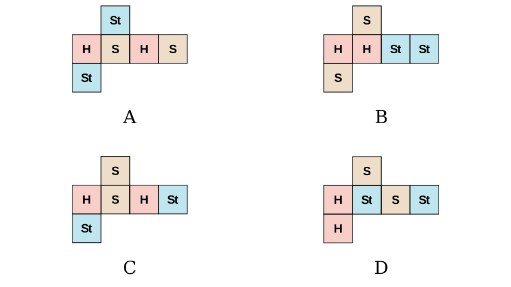
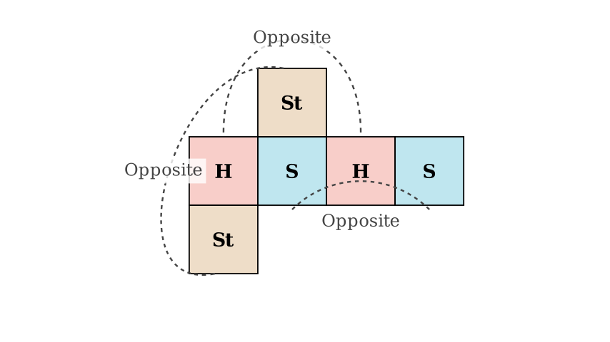

Problem Statement: Xiaoxiao made a cubic gift box as shown in the figure. The patterns on opposite faces of the cube are identical. Which of the following plane figures (A, B, C, or D) could be the net from which this cubic gift box was folded?
Solution Approach: 1. Analyze the Constraints: The problem states that opposite faces have identical patterns. This means the cube must have: * Two "Heart" faces opposite each other. * Two "Smiley" faces opposite each other. * Two "Star" faces opposite each other. 2. Analyze the Nets: We will examine each option (A, B, C, D) using the rules of cube folding. Specifically, we will look for rows of squares where faces separated by one square must be opposite in the 3D form. 3. Elimination: We will discard any option where non-identical patterns end up on opposite faces.

Analyzing the Folding Rules:
In a cube net, a common configuration involves a straight row of four squares. When folded into a cube: * The 1st square in the row is opposite the 3rd square. * The 2nd square in the row is opposite the 4th square. * The remaining flaps (top and bottom) form the remaining opposite pair.
Let's apply this rule to check if the "Opposite Faces are Identical" condition is met.
Step-by-Step Evaluation:
Result: This violates the rule (Heart must be opposite Heart). Option B is incorrect.
Option C:
Result: This violates the rule (Smiley must be opposite Smiley). Option C is incorrect.
Option D:

Verifying Option A:
Let's look closely at Option A: * The Main Row: The sequence is Heart (1) - Smiley (2) - Heart (3) - Smiley (4). * Position 1 (Heart) is opposite Position 3 (Heart). Matches. * Position 2 (Smiley) is opposite Position 4 (Smiley). Matches.
Conclusion: Only Option A satisfies the condition that all pairs of opposite faces have identical patterns.
Final Answer: A